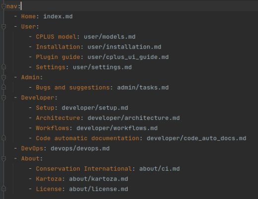
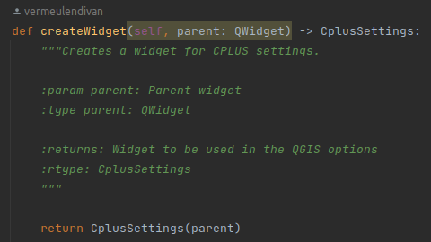
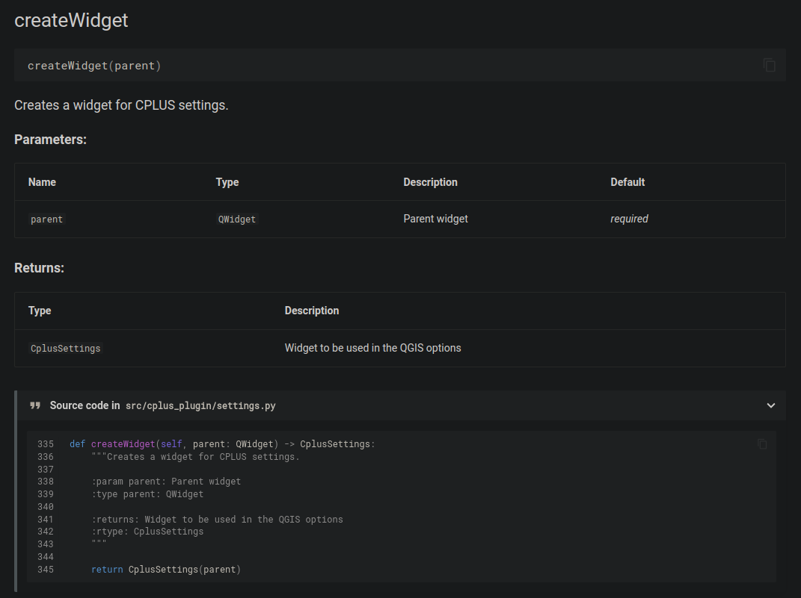
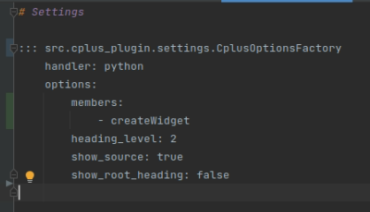
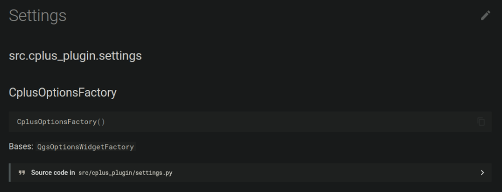
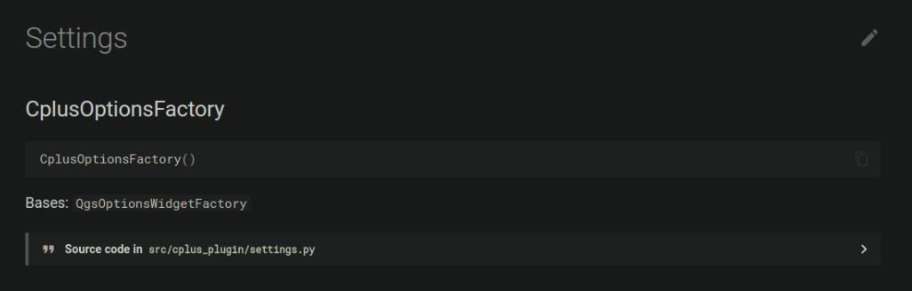
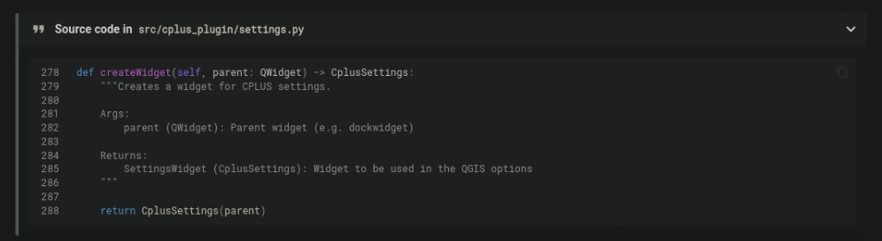
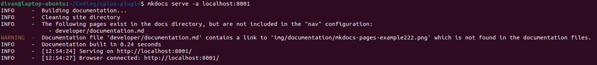

Working with documentation
Documentation is written using mkdocs. A detailed description on getting-started with mkdocs is available here. Developer documentation will be created and generated using mkdocstrings.
Install mkdocs
- Open the terminal
- Run "pip install mkdocs"
- This should install mkdocs and all requirements
Creating a new project
This should not be required as the mkdocs has been created already, but serves more of a guide for a user whom are new to mkdocs.
- Open the terminal
- Run "mkdocs new ."
- This will generate the documents folder with the home page index markdown file
Updating the mkdocs.yml file
Mostly, the only changes a user will need to make is to the nav section in the mkdocs.yml file (Figure 1). Other options, such as the themes, plugins and extensions, should require no changes.

Figure 1: Navigation example of mkdocs
Here is an explanation on how the nav should be updated:
- It is important to keep to the structure of the mkdocs
- Each section focusses on a particular aspect, for example User will provide information on installing the plugin, a guide on how to use the plugin, etc.
- The order in which the nav is structured will determine the tabs order on the site, as shown in Figure 2

Figure 2: Tabs in a generated site
- Each tab, or group, will then be structured as in Figure 3

Figure 3: Structure created by markdown headings
- The additional titles (in the Plugin guide section in the above example) is based on the headings provided in the guide markdown file (cplus_ui_guide.md in this case)
- Headings for each section should be short, but descriptive
- The section itself can have a more detailed description
- Add screenshots where possible. This will make the guide(s) user-friendly
mkdocstrings
This is an important aspect of documenting code. Using mkdocstrings is an easy and effective way of keeping track of classes, functions, etc. Any changes to the code will automatically update here, but the developer needs to make the changes in the code (comments) for this to happen.
The comments for mkdocstrings is three sections:
- Description: A description on what the function does. A destailed description are welcome
- param: List of parameters for the function. Type and description should be included
- returns: A list of values which the function would return. Type should be included, with a description

Here is an example of the end-result:

mkdocstrings options
The user can also do fine-tuning of the resulting site. Here is a list of important options to be aware of: members, show_root_directory, show_source, and heading_level.
- heading_level: The header level of the content (functions, etc.) which will be added
- members: Only these function/classes will be shown

- show_root_directory: The root directory of the code
- Best will be to disable this, as it looks neater
- Here is an example of show_root_directory enabled, followed by an example when it is disabled:


- show_source: Shows the directory of the source code and a snippet of the code

More information on this can be found here.
Serving the pages locally
This step is useful when making changes and the user wants to test and review their changes to the mkdocs before creating a pull request.
- Open the terminal
- Run "mkdocs serve"
- Figure 4 shows an example of the result

Figure 4: Console example of serving mkdocs
- On default, mkdocs is served to localhost:8000. But if the port is already in use, the user needs to provide a port number
- Run "mkdocs serve -a localhost:8001". The user can use a port number of their choosing
- Open the URL in a browser: localhost:8000
- The Home page should be similar to Figure 5

Figure 5: Site example. This is the Home page
Errors
When performing the serve, mkdocs will automatically check for any errors. An example will be when a file linked in the documentation cannot be found (Figure 6).

Figure 6: Missing file example when serving mkdocs
Be sure to check for such errors in the console prior to creating a pull request for your documentation changes.
GitHub pages
This is only required if it has not been set up on GitHub for the repository, or if it has been disabled. Only a user with admin rights to the repository will be able to do this.
- Go to the repository and click on Settings
- Click on Pages
- Set the branch to "gh-pages"
- Click Save
- Select the action
- Select Deploy
- Open the Run mkdocs gh-deploy section
- The URL should be https://kartoza.github.io/cplus-plugin/